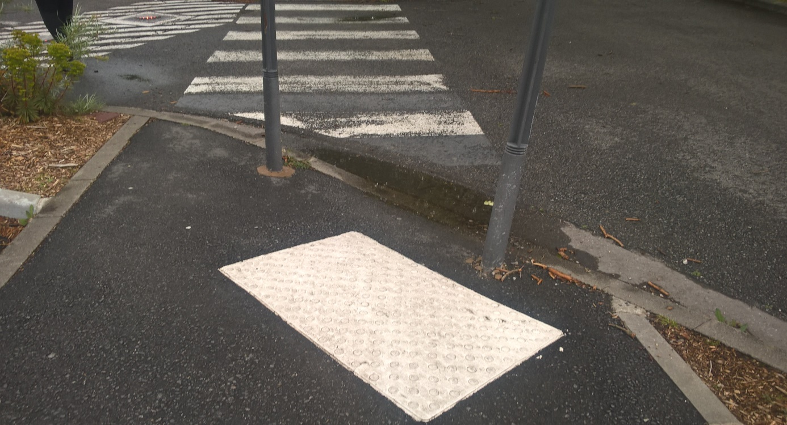

Comment contribuer ?
1/ Présentation des outils :
À partir de votre téléphone portable, vous pouvez enrichir les données de la carte. Si vous constatez qu’un bâtiment ou qu’un chemin particulier présente des problèmes d’accès pour un handicap en particulier, plusieurs outils existent afin que vous puissiez renseigner vous-même ces problèmes d’inaccessibilité sur la carte. Ces informations seront prises en compte par les personnes concernées lorsqu’elle chercheront à prendre ces trajets, facilitant donc énormément leurs déplacements.
L’outil OSM Contributor Mapping Tool est une application que tous les contributeurs peuvent utiliser en la téléchargeant directement depuis le Play Store. Cette application est configurable pour une région en particulier ou bien un type de données particuliers (mobilité réduite, etc…).
Vous pouvez aussi directement modifier les données sur le site d’OSM en utilisant votre navigateur web.
2/ Comment installer :
Vous pouvez tout simplement installer OSM Contributor Tool via la Play store dont voici le lien et QR Code : Lien
Ensuite, voici le lien à suivre pour faire les modifications directement sur le site d’OSM : Lien
3/ Premiers pas d’utilisation :
OSM Contributor Tool :
Lorsque vous ouvrez l’application, vous arrivez sur cette page. Si c’est votre première utilisation, vous devez alors commencer par configurer l’application grâce au menu de configuration en haut à gauche. Vous pouvez aussi choisir vos filtres, décider d’ajouter des données grâce au bouton ( + ) en bas et gérer la position.
Les fonctionnalités les plus intéressantes sont : Charger les profils et les paramètres. Vous pouvez charger un profil pour ne recevoir et ne renseigner que les données spécifiques à un profil en particulier, par exemple uniquement pour les vélos ou uniquement pour les chaises roulantes.
Vous pouvez choisir un profil qui orientera les données que vous allez afficher et entrer. Par défaut, il faut se mettre sur le profil initial : No name provided.
En ce qui concerne l’édition de chemins, vous pouvez sélectionner un nœud et modifier sa position, mais ceci est déconseillé si vous n’êtes pas un spécialiste pour éviter d’insérer des erreurs sur les positions des routes et des chaussées.
Le point en bleu est celui que vous avez choisi d’éditer. Il suffit de glisser le doigt sur l’écran pour changer sa position.
Ici un POI a été sélectionné. Il s’agit d’un passage piéton. Plusieurs options vous sont offertes. Vous pouvez le supprimer si vous constatez qu’il s’agit d’une erreur, le dupliquer, changer sa position ou l’éditer.
Pour chaque type de POI, il y a une configuration par défaut qui est proposée. Vous pouvez éditer les valeurs des clés proposées. Vous pouvez également décider d’ajouter des clés en appuyant sur le bouton ( + ).
Pour ajouter une clé au POI, vous entrez alors son nom et sa valeur.
Pour pouvoir contribuer à OSM, vous devez créer un compte OSM d’abord. Votre adresse mail de connexion s’affiche en bas de la page paramètres. Si vous voulez utiliser un de vos comptes existants non-OSM, notez que seul les comptes Google sont acceptés.
Site OSM :
Une fois connecté sur le site d'OSM vous pouvez accéder à l'éditeur en ligne (ici iD) À la première utilisation l'éditeur vous proposera un tutoriel, suivez-le.
4/ Comment remplir les données :
Vous en êtes maintenant à l’étape de Reporting, où il s’agit d’alimenter nos bases de connaissances sur l’accessibilité des bâtiments et des routes afin que ces informations soient facilement accessibles par les utilisateurs concernés sur la carte. Pour chaque type de problème, plusieurs attributs peuvent être utilisés pour renseigner les informations appropriées. Voici une liste du vocabulaire important :
Accessibilité d’un bâtiment :
Pour renseigner sur l’accessibilité d’un bâtiment ou d’un endroit pour une chaise roulante, vous utilisez l’attribut wheelchair et vous lui donnez pour valeurs : yes si c’est accessible, no si ça ne l’est pas, limited si vous jugez que l’accès est difficile ou limité à cause de la qualité des sols ou de la disposition des ascenseurs par exemple. Pour renseigner si un batiment dispose de toilettes aménagées pour le handicap, vous pouvez utiliser l’attribut toilets:wheelchair=yes/no.
Accessibilité des passages piéton :
Pour donner des informations sur un passage piéton, vous utilisez l’attribut : highway=crossing. Pour signaler la présence d’une surface podotactile au début d’un passage piéton vous utilisez l’attribut : tactile_paving. Parfois, ces surfaces sont mal positionnées, ou elles ne sont pas assez larges, etc. L’attribut tactile_paving prend donc pour valeurs yes si la surface ne comporte aucun des problèmes cités plus haut, bad dans le cas contraire. Vous lui donnerez pour valeur no s’il n’y a pas de surface podotactile pour ce passage piéton-là.
Voici quelques exemples :

Surface podotactile très mal positionnée. Ici vous utilisez tactile_paving=bad
Ce passage piéton n’est pas accessible d’un côté car le trottoir est trop élevé. Ici il faut identifier que c’est un passage piéton grâce highway:crossing, puis dire que celui-ci n’est pas accessible en utilisant l’attribut : wheelchair=no
Ce passage piéton contient une surface podotactile d’un côté et pas de l’autre. Dans ce cas il faut renseigner sur OSM : tactile_paved=no
Qualité des sols :
Pour les personnes à mobilité réduite, la qualité des sols sur lesquels leurs chaises roulent est très importante. C’est donc une information utile à reporter sur la carte et que OSM permet de mettre en valeur grâce à l’attribut surface. Vous pouvez renseigner le type de surface grâces à plusieurs valeurs connues de OSM : paved, asphalt, concrete, paving_stones, cobblestone, metal,. Mais l’information la plus qualitative est celle de la qualité du sol modélisée par l’attribut smoothness. Vous donnerez à ce dernier attribut les valeurs : very_bad, bad, intermediate, good.
Ce sol est en très mauvais état ce qui rend la circulation de la chaise roulante difficile. Il faut alors renseigner surface:smoothness=bad.